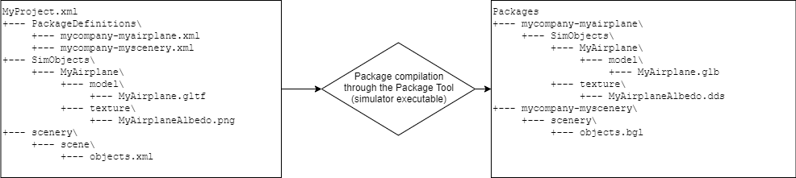

SDK Overview
- General philosophy
- 3D models
- Textures and materials
- SimObjects
- Sceneries and airports
- Missions
- Procedural world generation
- FX
- Sound
- UI
- Gauges
- C++ support
- DRM
General philosophy
Packages
Add-ons for Microsoft Flight Simulator are developed in the form of independent packages. A package can contain any type of content supported by Microsoft Flight Simulator: airplanes, sceneries, missions…
A package is a single unit of redistributable content. It consists in a single directory containing assets compiled for direct consumption by the simulator, plus some special files:
layout.json, which contains a list of all the files present in the packagemanifest.json, which contains meta-information about the package (e.g. package name and version number).
The packages system relies on a system called the Virtual File System (or VFS for short). In the VFS, a package, can be mounted, in which case all files present in the package become accessible/can be referenced by files present in other packages.
In the case where 2 packages feature file sharing the same relative path inside the package, the version of the file in the package mounted last will take precedence. E.g.:
Packages
+-- package-01
| +-- manifest.json
| +-- layout.json
| +-- MyDirectory
| +-- myfile.cfg
+-- package-02
| +-- manifest.json
| +-- layout.json
| +-- MyDirectory
| +-- myfile.cfgIn this example, the path MyDirectory\myfile.cfg will refer to package-01\MyDirectory\myfile.cfg if package-01 was mounted last, or ot package-02\MyDirectory\myfile.cfg in the case package-02 was mounted last.
Files present in a package mounted in the VFS can also be referenced by files that are present in other packages.
The packages location is set by the user upon installation of Microsoft Flight Simulator. The selected folder contains two subfolders named Official (for packages downloaded by the game) and Community (where you can install your own packages).
Tools
Microsoft Flight Simulator departs from its predecessor, Microsoft Flight Simulator X (or FSXSHORTGAMENAME for short), in the way developer tools are integrated. Where FSX used to provide separate compilers for each type of resource (e.g. bglcompiler.exe, SimPropCompiler.exe…), the compilers of Microsoft Flight Simulator are integrated into the simulator executable under the umbrella of a build automation tool called the Package Tool (similar in spirit to a Makefile system).
Below is an illustration of the process that goes into building 2 packages that are part of the same project file. Note how .gltf files get compiled to .glb, .png files get compiled to .dds and .xml files get compiled to .bgl. 
Tools are split into 2 categories:
- external tools, which are distributed as part of the SDK (e.g. the 3D Studio Max glTF exporter plug-in)
- in-sim tools, which are available under the Developer Mode (e.g. the Project Editor, the Scenery Editor, the Missions Editor…).
3D models
In Microsoft Flight Simulator 3D models, scenes and animations are stored following the glTF (GL Transmission Format) file format. glTF is a Khronos-backed standard file format consisting of a JSON file and referencing accompanying binary files. In Microsoft Flight Simulator, glTF support relies on custom glTF extensions, whose schemas can be found as part of the SDK installation in the Schemas subfolder.
The old MDL file format from FSX is now deprecated and should not be used when developing add-ons for Microsoft Flight Simulator
Textures and materials
Materials for 3D models are specified in glTF files, and the referenced textures are in .png format. The materials comply with PBR (Physically Based Rendering). Upon compilation by the glTF compiler (invoked by the Package Tool), .gltf files get compiled to .glb and .png files get compiled to .dds files. The resulting .glb file makes use of several glTF extensions, including MSFT_texture_dds as well as Microsoft Flight Simulator specific ones.
Materials for usage in the scenery tool are edited via the Materials Editor, which is part of the Developer Mode, and are stored in .xml format. The source textures are also edited in .png format and converted to .dds for direct consumption by the simulator runtime.
SimObjects
In Microsoft Flight Simulator SimObjects are entities which have a simulation attached. The main use case for SimObjects is aircraft.
Structure
SimObjects are comprised of several files:
- meshes and textures, using the glTF file format
- configuration files, in the form of
.cfgfiles - checklists, in the form of
.xmlfiles
Note:
.airfiles (FSX flight model configuration files) have been removed in favor of exposing all flight model parameters in plain text.cfgfiles.
Note: SimObjects support different Levels of Detail (LoDs).
Edition
Aircraft configuration files can be edited through the Aircraft Editor, which is part of the Developer Mode.
Model behaviors
glTF files support animations, but those animations need to be linked to Simulation Variables. This link is done through a .xml file which is named after the name of its accompanying .gltf file, effectively defining the model’s behavior. Model behaviors can reuse a library of XML templates which are stored in a folder ModelBehaviorDefs in the VFS (see package fs-base-aircrafts-common as part of the standard installation).
In a future release, a Model Behavior Editor will be available as part of the Developer Mode. Currently, edition of model behaviors still needs to be done manually.
Note: This file is the modern equivalent to the
modeldef.xmlfile that was distributed as part of FSX SDK, which was part of the.mdlcompilation process.
Sceneries and airports
Microsoft Flight Simulator add-ons can feature sceneries and airports, which are made of:
- 3D models, stored in model libraries
- materials and textures
- model placement
- vector data (allowing for trees placement or removal, terraforming, biome changes…)
- airports data
Sceneries and airports are primarily edited using the Scenery Editor and Materials Editor, both of which are available as part of the Developer Mode.
Object placement and airports data are saved in .xml format and vector data are saved in the form of shapefiles. Both are compiled to .bgl files using the BGL compiler invoked by the Package Tool.
Note:
.xmland shapefiles compilation to.bglfiles is similar to how the FSX assets pipeline worked. The file formats are similar but have been extended with new features.
Missions
Missions can be edited using the Script Editor, which is available through the Developer Mode. The editor allows for real-time edition of missions, triggers placement and logic edition.
Procedural world generation
In Microsoft Flight Simulator the world is generated using various sources of data. It supports primarily 3 differents quality levels:
- Photogrammetry, where meshes are downloaded for each tile
- Digital Elevation Model (DEM) + aerial imagery combination
- Digital Elevation Model (DEM) + texture synthesized ground textures
Level #3 is used for the offline version of the world and in cases where the aerial imagery quality is judged inadequate.
As a result, some data are stored locally and part of the installation of the simulator:
- Building footprints (stored in CGL files)
- Biome information (stored in CGL files)
- Vector data (e.g. water, roads. Stored in CGL files)
- Textures for procedural ground texture synthesis (stored in DDS files)
- Variations for the vegetation (stored in XML files)
- etc.
At the moment, those data cannot be edited by add-ons, but the plan is to make CGL files editable.
CGL is a container file format used for storing geolocated data. It can be used to store imagery, elevation or vector data. The data are stored following a quadtree scheme, on a Mercator projection of the Earth. See https://docs.microsoft.com/en-us/bingmaps/articles/bing-maps-tile-system for details on the projection system.
Note: The Autogen technology from FSX has effectively been removed in Microsoft Flight Simulator Note: CGL files are a replacement for BGL files for storing imagery, elevation data, vector data and footprints. BGL files are still used when it comes to airports data or edited vector data (in the form of polygons).
FX
Particle effects are edited in .fx files, which are plain text files. They reference materials edited using the Materials Editor.
Note: At the moment, no editor is available for
.fxfiles, and we expect the current FX technology to break in future releases.
Note: The
.fxfiles are similar to the ones found in FSX, one of the main difference being that links are made to materials as defined by the Materials Editor instead of links to single albedo textures.
Sound
The sound engine used in Microsoft Flight Simulator is Audiokinetic Wwise, which allows for easy edition of advanced sound effects by sound designers using the Wwise editor. Sound banks are packaged and distributed as part of Wwise file packages (.PC.PCK).
IMPORTANT: One must use Wwise version 2019.2.5 Build 7349 which can be downloaded from https://www.audiokinetic.com/
Linking Wwise Runtime Parameter Control (RTPC for short) to Simulation Variables is done through a file named sound.xml in the SimObject’s sound folder.
UI
UI in Microsoft Flight Simulator is developed using modern HTML 5 technologies (HTML, JavaScript, CSS).
At the moment UI is not customizable as part of add-ons, though there are plans to make it possible to include UI elements as part of packages.
Gauges
2D gauges
Glass cockpits are developed using HTML technologies (similar to UI). HTML pages are referenced from the panel.cfg file in the panel folder of a SimObject.
3D gauges
3D gauges are part of the glTF model for an aircraft and are essentially made of a mesh, textures and the accompanying animations.
Note: the old FSX XML gauges system is still supported but is deprecated in favor of HTML.
C++ support
C++ support is provided in the form of WebAssembly modules. In particular, this can be used for implementing complex gauges and porting from legacy code. The following APIs are currently available:
- 2D vector graphics drawing API (for gauges)
- SimConnect
More APIs may be authored depending on community feedback.
DRM
Digital Rights Management (DRM for short) functionality is planned for a future release (see the roadmap page) and should work by encrypting the entirety of the package content. Therefore, WebAssembly binaries, HTML code or any type of content that goes into packages will be protected the same way.
The provided DRM solution will be available through the official marketplace framework.